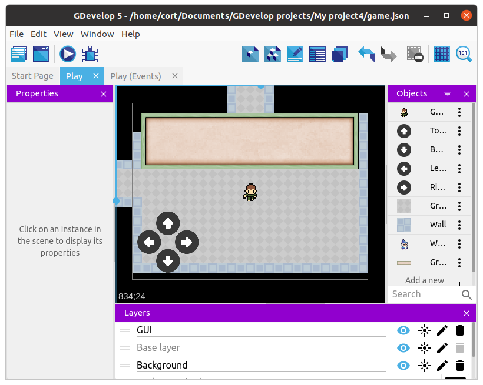
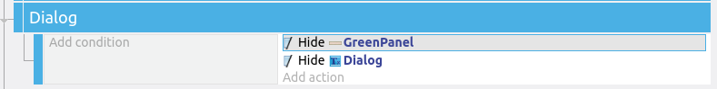
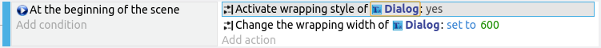

Non-Player Characters
You can't have an RPC without Non-Player Characters (NPC). We'll start with a Wizard (...or whatever you prefer); he'll be the one to give us our quest.

Drag an instance of the wizard on to the scene, resize him, and set an appropriate animation (...I'm using animation 1, "Idle").
Dialog
We'll need to provide a dialog box, so add a suitable sprite (...I'm using Green Panel).

Resize and position an instance of the panel in the scene, and set the layer to GUI.

Next, add another new object, this time select New Object from Scratch and choose Text. Name the new object Dialog, and fiddle around with the font and color if you like. No need to change the default text (...we'll change it in the events).
Drag an instance of Dialog on to the scene, set the layer to GUI, then position it suitably within the dialog panel.

Dialog Events (Part 1)
We want our dialog to do a few things...
- Hide when the player is not touching an NPC
- Appear when the player touches an NPC
- Show dialog from the NPC
It's not much for now, but we'll make it do a little more in dialog part 2.
Hide when not touching NPC
We'll start by adding events to hide the dialog when the player is not touching an NPC.
To keep things organize, start by creating a group event named Dialog. Add a sub-event to Dialog, and for the action, select the GreenPanel and choose Hide. Add a second action to hide the Dialog object.

Appear when touching NPC
Add another sub-event to Dialog. For the condition, select the player, choose Collision, then the Wizard. Add two actions to Show the GreenPanel and the Dialog object.

Show dialog from the NPC
Select the Collision with Wizard event, and add a sub-event to that. For this sub-event, we can leave the condition blank. For the action, select Dialog, Modify the Text, set the Modification Sign to = (set to), and type in a dialog of your choice.
This is what I'm using...

Be sure to put double quotes (") around your text.
Testing and Touch-up
Test it out. The dialog box should appear when your player touches the wizard, but the text may be too long. To fix that, we need to set the wrapping options for the text object.
Add a new sub-event under Dialog. We only need to set the wrapping options once, so for the condition, select Other Conditions and At the beginning of the scene. For the actions, select the Dialog object, and set Wrapping to Yes. Add a second action, select the Dialog object, and set Wrapping Width to 600 (...or whatever you prefer).
